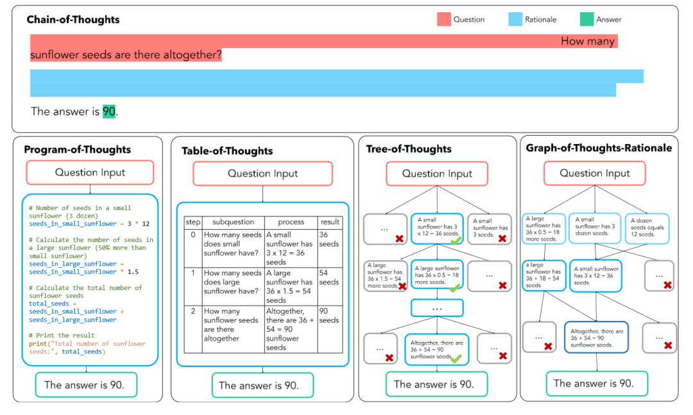
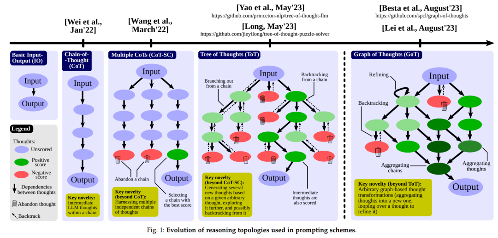
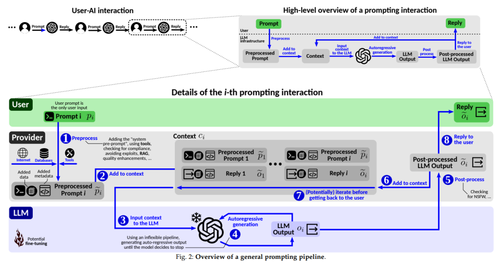
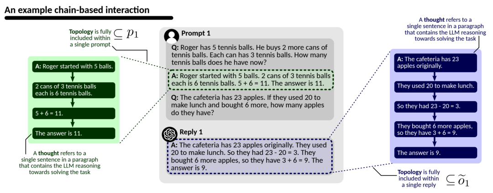
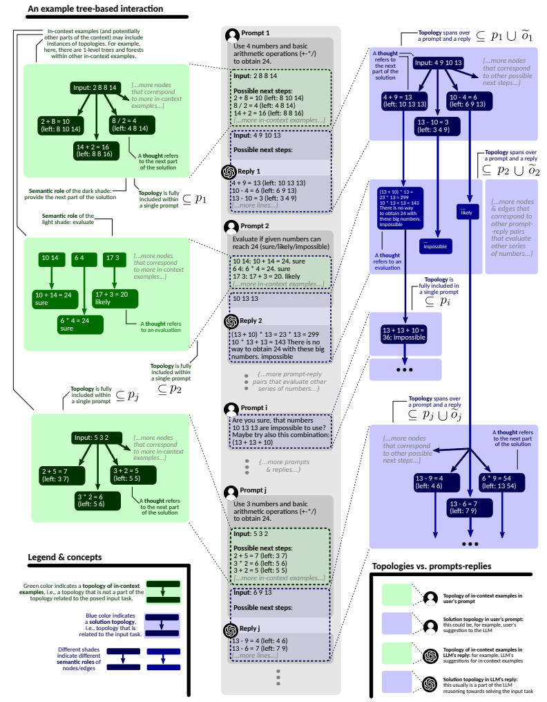
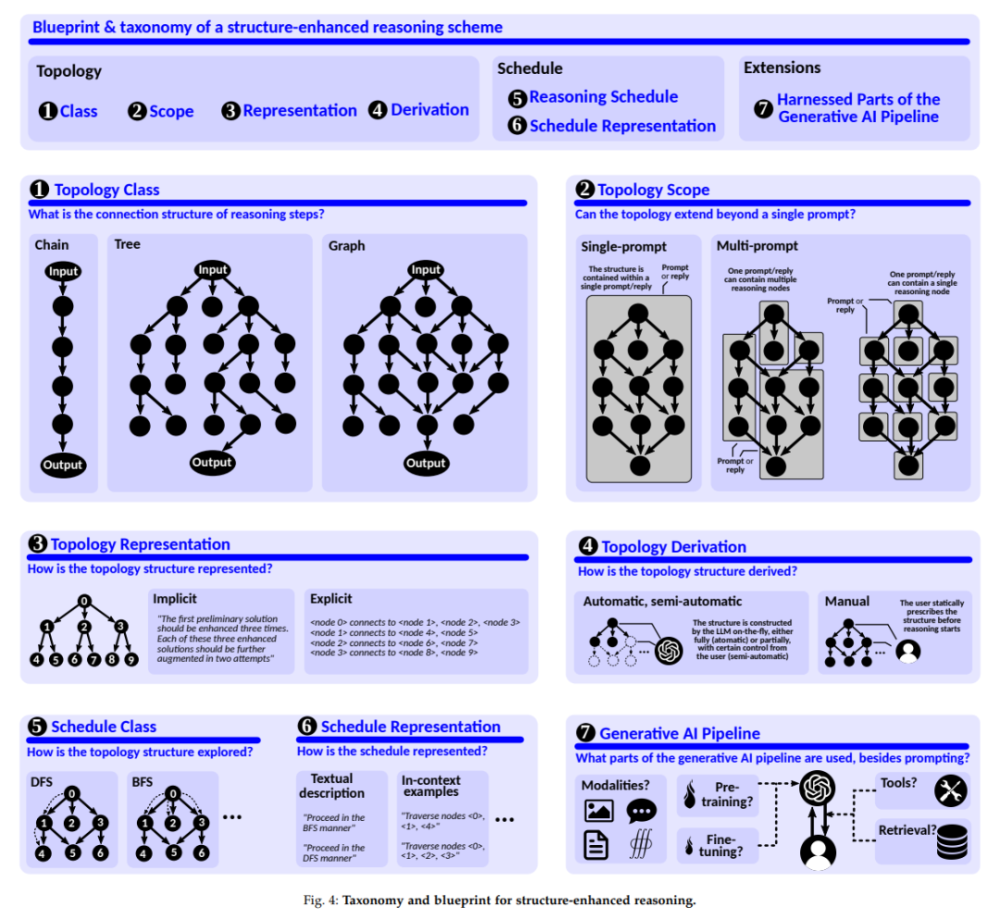
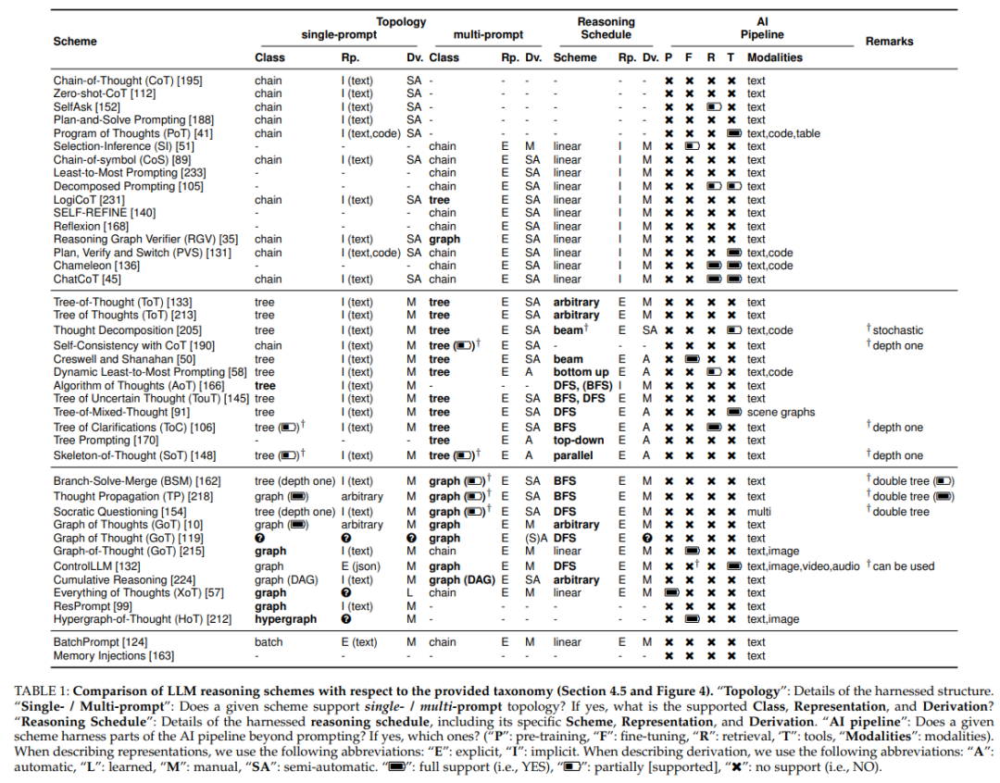
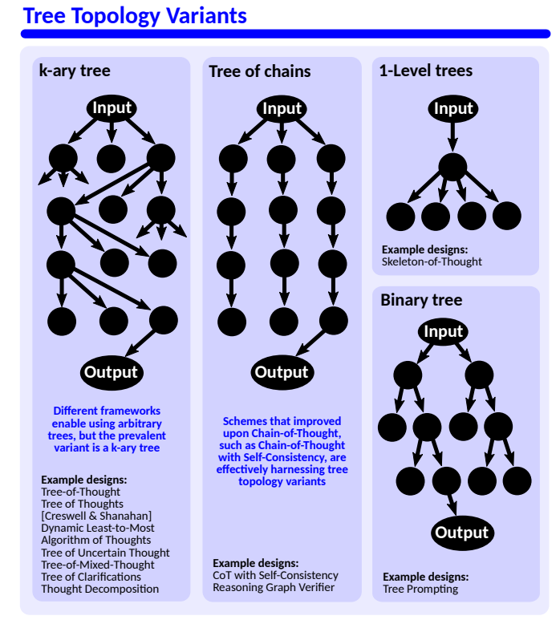
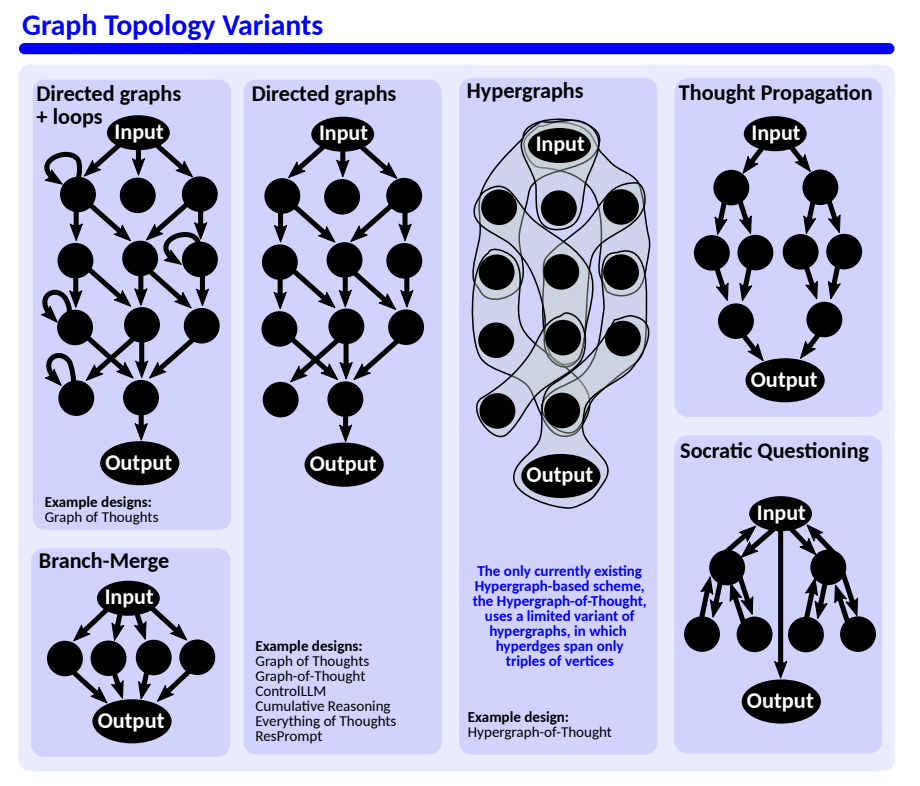
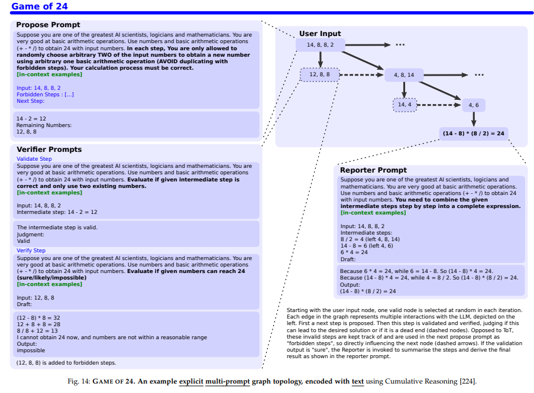

Deconstructing Chains, Trees, and Graphs of Thought: How Can We Improve LLM Reasoning?
Across the long history of biological evolution, our ancestors were “lucky” enough to draw a ticket called intelligence. Intelligence gave humans the ability to think, and much of what thinking does can be summarized by one word: reasoning.
The rise of large models has moved artificial constructions of intelligence from the “perception” capabilities associated with convolutional and recurrent neural networks toward “cognition.” Among cognitive capabilities, reasoning may be one of the most important abilities large models have demonstrated. A few months ago, Professor Zhuosheng Zhang at Shanghai Jiao Tong University published a survey tracing the development from Chain-of-Thought (CoT) techniques to AI Agents.
At a high level, LLM reasoning can be viewed as constructing a set of reasoning nodes and the dependency relationships between them while solving a problem, producing a structured graph that supports the reasoning process. We can call this a Topology of Reasoning. The topology may be a chain (CoT), a tree (ToT), or a more general graph (GoT).

As large models have developed, combining prompt engineering with structured reasoning topologies has shown enormous potential for improving reasoning performance and solving complex tasks. To deepen our understanding of this promising area, researchers from ETH Zurich provide a detailed discussion of the concepts, taxonomy, and importance of reasoning topologies, unpacking the essence of chains, trees, and graphs of thought and offering a broad survey of LLM reasoning.
Paper:
Topologies of Reasoning: Demystifying Chains, Trees, and Graphs of
Thoughts
What Is a Reasoning Topology? And What Is a Prompt?
From Chat to reasoning, the development of large models has moved from direct question-answer interaction toward using intermediate steps to guide the model toward a final solution. Familiar examples include Chain of Thought (CoT), Tree of Thoughts (ToT), Graph of Thoughts (GoT), and many Agent systems such as AutoGPT, ReAct, and LLMCompiler.
If we put these works on a timeline, the evolution looks something like the figure below. Instead of a direct Input-to-Output mapping, increasingly complex graphical structures emerge between the two—these structures are what the paper calls reasoning topologies.

In the simplest Chat mode, a model receives a user prompt and produces an answer in a black-box manner without exposing any explicit reasoning structure. Building on this basic mode, in January 2022 Jason Wei and collaborators introduced Chain-of-Thought prompting, inserting segmented linear reasoning nodes between input and output and linking them into a chain.
Shortly afterward, Self-Consistency CoT (CoT-SC) extended the idea by generating multiple reasoning chains and using a majority answer as the final output. Topologically, this converts one chain into several parallel chains.
By May 2023, work led by Princeton introduced Tree of Thoughts (ToT), while another paper from Theta Labs explored LLM-guided tree-of-thought reasoning. Building on parallel chains, ToT introduced a tree structure that broke the independence among chains and gave the model the ability to search among alternative reasoning paths.
Then in August came Graph of Thoughts (GoT), a natural extension from trees to more general graphs. A graph allows arbitrary dependencies among reasoning nodes, so a node can have multiple parents and children. Multiple nodes can be aggregated into subgraphs that solve subproblems, and those subgraphs can then be combined into a complete solution.
The evolution can therefore be summarized into three broad topology families:
- Chain topology (Chain of Thought). Each reasoning step is connected linearly. This is well suited to problems that can be solved through a sequence of ordered steps.
- Tree topology (Tree of Thoughts). A reasoning step may branch into multiple alternatives, allowing exploration of different solution paths. This is useful for complex problems involving choices and search.
- Graph topology (Graph of Thoughts). Dependencies can be formed between arbitrary nodes. This is the most flexible structure and is suitable for tasks that require dynamic planning, aggregation, and coordination among multiple subproblems.
Reasoning topologies are directly connected to the prompting process. But what does a complete prompt pipeline look like?

A prompt is the primary communication channel between humans and large models. From input prompt to model reply, the process can roughly be divided into the following steps.
First, the human prompt is preprocessed (1). System-level prompts and metadata may be added, safety or policy checks may be performed, and the prompt may be expanded or restructured according to platform rules. In a multi-turn conversation, the processed prompt is then combined with the model’s context (2), including historical prompts and replies.
The processed prompt and context are sent into the model (3), which generates output autoregressively (4). Depending on the application, the raw output may then pass through post-processing (5) and be stored in contextual memory (6). It may be sent back into the model for another iteration (7) or returned directly to the user (8).
Together, this full prompt pipeline forms the basic infrastructure through which humans interact with large models, whether in Chat mode or Agent mode.
The Essence of Reasoning Topologies
Whether we talk about chains, trees, or graphs of thought, the word “thought” sits at the center. But what exactly is a thought?
In CoT, a “thought” may be a sentence or short passage containing one part of the reasoning process. In ToT, it may be an intermediate candidate solution to the original problem. In GoT, it may represent a subtask produced by decomposing the original task.

Based on these different uses, the paper gives a formal definition: a thought is the basic semantic unit in a task-solving process. One step can be a statement, a plan, a paragraph, a set of documents, or even a sequence of numbers.
The authors represent thoughts as nodes, while the
dependencies among thoughts are represented as edges. A
reasoning topology is therefore a graph G = (V, E), where
V is the set of thought nodes and E is the set
of dependency edges. If the objective is to solve a task as quickly as
possible, one possible topology-design objective is to minimize the
distance between the input node and the output node.
Thought nodes may be heterogeneous, producing a heterogeneous graph. Existing work has already explored graph-learning methods over heterogeneous structures as a way to improve model reasoning.

At a high level, reasoning topologies can be divided into two types: solution topologies and exemplar topologies.
A solution topology connects the input task description to the final solution. Starting at the input node, one can trace a path through reasoning nodes to the output. An exemplar topology, by contrast, appears in in-context demonstrations. It is not directly part of the final input-output solution path; it acts as an example that shows the model how reasoning should be organized.
As illustrated above, solution topologies often extend across multiple prompts, while exemplar topologies are more likely to be contained inside a single prompt. Representing them differently may help reduce token consumption.
The paper describes a complete reasoning structure through four dimensions: topology class, topology scope, topology representation, and topology derivation.
- Topology class describes how nodes and edges are connected: chain, tree, or graph.
- Topology scope describes how much of the prompt/reply/context is covered by the topology. It can be a single-prompt topology or a multi-prompt topology.
- Topology representation describes how the topology is expressed in prompts, replies, or context—implicitly or explicitly.
- Topology derivation describes how the topology is obtained—manually, semi-automatically, or automatically.

Once a topology is defined, the model reasons over it. The topology acts as a skeleton, while a reasoning plan specifies how it should be explored—for example, depth-first search or breadth-first search. More advanced scheduling strategies can also be used.
The representation of that plan—how the model is told to follow it—can be direct textual instruction or in-context examples. Finally, the full prompting pipeline may incorporate external tools in addition to prompts alone.
Different Types of Reasoning-Topology Methods
The framework above provides a useful taxonomy for understanding chains, trees, and graphs of thought.

The authors organize existing LLM reasoning work into a unified system. Starting with the foundational Chain-of-Thought method, CoT uses an implicitly represented topology within a single prompt and uses in-context topological examples as its reasoning representation.
Many extensions build on CoT. Program of Thoughts (PoT) uses code to improve reliability. Plan-and-Solve prompting divides a complex task into subtasks and executes them step by step in a zero-shot manner. Chain of Symbols (CoS) uses compressed symbolic representations to fit more information into context and then performs CoT-style reasoning over those symbols.
For tree topologies, the paper further distinguishes several forms, including k-ary trees, chain trees, one-level trees, and binary trees.

Compared with chain topologies, the core feature of tree topologies is exploration and sampling across alternative task-decomposition paths, followed by selecting stronger paths through scoring or voting.
A representative chain-tree method is CoT-SC, which improves reliability by sampling multiple reasoning chains. A one-level tree appears in Skeleton of Thought, which uses divide-and-conquer reasoning to generate a solution skeleton. K-ary trees are the most common general form and have inspired many search strategies, including random beam search, uncertainty-based scoring, hybrid trees, and others.
The paper also distinguishes multiple graph-topology structures.

The key difference between graph and tree topologies is the introduction of aggregation. Graphs can coordinate and combine multiple subgraphs, strengthening reasoning through collaboration among different partial solutions.
Graph of Thoughts (GoT), for example, uses a multi-prompt method to improve problem-solving. It decomposes a task into a graph of subtasks—an operation graph—and coordinates prompting and reasoning over that graph.

Across CoT, ToT, and GoT, the paper identifies both similarities and important differences.
Chain topologies guide the model linearly, encouraging clear, traceable “step-by-step” reasoning. Tree structures introduce the possibility of exploring several next-step solutions at each branch, allowing the model to search among potential reasoning paths. Graph structures provide the most general framework, allowing arbitrary reasoning steps to be aggregated into a unified solution and enabling nonlinear problem solving.
From a cost perspective, chains are usually faster and more efficient. Trees and graphs consume more computation and time. From a quality perspective, however, trees and graphs can outperform simple chains because they add exploration, branching, aggregation, and nonlocal transitions—capabilities that may be necessary for genuinely complex problems.
Combining the strengths of different reasoning topologies, a strong LLM reasoning architecture can be divided into four components: a generator, an evaluator, a halter, and a controller.
The generator brainstorms new ideas as thought nodes. The evaluator scores those nodes and estimates their quality. The halter determines whether the exploration is sufficient and whether the current solution satisfies the task. The controller acts like a project manager, coordinating the overall reasoning process.
Future Directions and Conclusion
Leaving large models aside for a moment, human reasoning is often divided into four broad types: deduction, induction, analogy, and abduction. Deduction moves from abstract knowledge to conclusions while preserving logical validity. Induction moves from specific observations to general conclusions, compressing information into patterns. Analogy resembles a form of transfer learning, using known knowledge to make judgments in unfamiliar domains. Abduction links observations back to plausible causes and constructs explanations.
If we use these human reasoning abilities as a mirror, we can ask how far reasoning topologies have moved large models toward human-like reasoning.
Problem solving fundamentally means using known information—the problem description in the prompt, task requirements, and methods from similar problems—to derive unknown information, namely the answer. A reasoning topology effectively provides a thinking template. A Chain of Thought encourages a model to list what it knows, read the prompt carefully, analogize from examples, induce an organizational pattern, and then deduce the final answer.
Tree of Thoughts adds “possibility” by allowing trial and error across branches. Graph of Thoughts generalizes further, building bridges among different subproblems and potentially enabling the kind of abductive leap that feels like sudden insight.
Seen this way, reasoning topologies resemble the neural pathways that connect ideas in the human brain. They provide routes through which different parts of logical reasoning can be linked.
An interesting feature of this survey is that it itself mirrors the four types of human reasoning: it inductively summarizes research on chains, trees, and graphs; abstracts the common idea of a “reasoning topology”; and then deductively uses that abstraction to organize a wide range of LLM reasoning methods.
The survey concludes with several promising future directions:
- Explore new topology classes. Beyond chains, trees, and graphs, structures such as cliques, dense subgraphs, hypergraphs, and hyperedges may produce interesting reasoning behavior.
- Improve explicit single-prompt representations. How a reasoning plan is explicitly represented—for example, as an adjacency matrix—may significantly affect reasoning efficiency.
- Automatically derive tree or graph topology. Automatically determining the structure of a reasoning graph could enable more efficient reasoning.
- Develop stronger single-prompt methods. Trees and graphs can improve quality, but faster chain-like methods may remain more broadly useful in practice.
- Design better scheduling algorithms. Breadth-first and depth-first search are not always optimal. Better reasoning schedulers may improve efficiency.
- Find better graph structures. There may be graph topologies that are significantly more efficient than those currently used.
- Integrate graph algorithms with graph reasoning. Combining classical graph algorithms with graph-based LLM reasoning may improve both representation and scheduling.
- Multimodal reasoning. Connect reasoning topologies with multimodal foundation models and explore how to reason over mixed text, image, audio, and other inputs.
- Retrieval augmentation inside prompts. External databases and knowledge bases can expand the scope and depth of model reasoning.
- Parallelization. Parallel prompting can improve reasoning efficiency and remains underexplored.
- Integration with complex systems. Incorporating structured data from complex systems into reasoning remains an important challenge.
- Hardware acceleration. Improvements in the hardware supporting inference may fundamentally reshape the design space for reasoning systems.